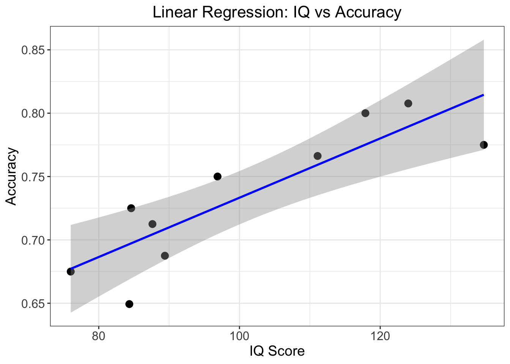

library(ggplot2)
library(patchwork)Basic data management and analysis using R
Analysing and plotting behavioural choice data
Now that you have a basic understanding how how R works, and what it is used for, let’s put our newly learned skills to practical use. In this section we will directly work with some simulated choice data from a behavioural experiment.
When working with data in our studies, we can consider R to be the central software for data management, analysis and plotting. It is quite robust for this purpose, in that it also reads in data of many different types and from many different sources 1:
Working with behavioural data in R
We will now work with an example dataset where participants were tasked with completing a behavioural task. Specifically, they were asked to complete a probabilistic reversal learning (PRL) task, a common paradigm used to assess cognitive flexibility and reward-based learning.
The task consists of three main phases:
- Choice Presentation: Two stimuli (a blue snowflake-like pattern and a yellow spiral pattern) are presented to the participant.
- Action Selection: The participant must select one of the stimuli (shown by the red frame indicating a selection of the blue pattern).
- Outcome: A monetary reward (20 cent coin) is shown as feedback.
In the PRL task, one stimulus is typically associated with a higher probability of reward (e.g., 80% chance of winning money), and a lower probability for a loss (e.g., 20% chance of losing money). After participants learn these associations, the contingencies are reversed, requiring the participants to adapt their choices.
The participants are given instructions that:
- One option is better than the other.
- This will switch at various points.
- You should make choices to maximise your points.
Importantly, the participants are not made aware of when and how many reversals take place.
We have example data for 10 subjects within the data subdirectory. Each one has an associated raw_data_subXX.txt file:
_data/
└── RL_raw_data/
├── sub01/
│ └── raw_data_sub01.txt
├── sub02/
└── raw_data_sub02.txt
├── ...
└── sub10/
└── raw_data_sub10.txtWe need to firstly install and load the required packages:
And now let’s load the data into R. We can read the data using the read.table function, specifying in the arguments that there is a header, and that the data columns are separated by a comma. We can then check the data by loading the first few lines using the head() function.
rm(list=ls())
data_dir = ('../_data/RL_raw_data/sub01/raw_data_sub01.txt')
data = read.table(data_dir, header = T, sep = ",")
head(data) subjID trialID choice outcome correct
1 1 1 1 1 1
2 1 2 1 1 1
3 1 3 1 1 1
4 1 4 NA 1 1
5 1 5 1 -1 1
6 1 6 2 -1 1
File separators
Two common file types are CSV (Comma-Separated Values) files which use commas to separate values, and TSV (Tab-Separated Values) files which use tabs.
The data columns represent the following:
subjID- the subject IDtrialID- the trial ID (80 trials per subject)choice- which image the subject selected (blue or yellow)outcome- whether the subject was rewarded (1) or was given a loss (-1)correct- whether the choice made was the ‘correct’ one (i.e., the image with the 80% reward contingency on that trial)
You may have noticed that there are some NA values contained in the data, namely within the choice column.
sum(complete.cases(data))[1] 78This will be in trials where the participant did not respond in time (as there is a fixed time limit to respond). We would like to remove these trials from the data.
We can do this by subsetting the data to only include cases where there are no NA values:
data = data[complete.cases(data),]
dim(data[complete.cases(data),])[1] 78 5So if we examine the data now, there are no NA values.
any(is.na(data))[1] FALSEThere are often many ways of doing the same act in R; this is just one example!
Exercise 3
1. Write a for loop which reads in each participant’s raw data (from _data/RL_raw_data/) and reshapes it in the ‘long format’ by each subject.
TIP: Use the sprintf function to get the file paths of all subject data. Type ?sprintf for more information.
Click to see the solution
# read in all the data
ns = 10
data_dir = '../_data/RL_raw_data'
rawdata = c()
for (s in 1:ns) {
sub_file = file.path(data_dir, sprintf('sub%02i/raw_data_sub%02i.txt',s,s))
sub_data = read.table(sub_file, header = T, sep = ",")
rawdata = rbind(rawdata, sub_data)
}
rawdata = rawdata[complete.cases(rawdata),]
head(rawdata) subjID trialID choice outcome correct
1 1 1 1 1 1
2 1 2 1 1 1
3 1 3 1 1 1
5 1 5 1 -1 1
6 1 6 2 -1 1
7 1 7 1 1 12. Create a new column called accuracy in the rawdata data frame, where each row indicates whether the choice was correct (1.0) or incorrect (0.0).
TIP: Recall that for each trial, each choice can either be 1 or 2, and whether this is accurate or not is based upon the value of correct for that trial.
Click to see the solution
rawdata$accuracy = (rawdata$choice == rawdata$correct) * 1.03. Calculate the mean accuracy for each subject and print out the overall accuracy across all subjects.
Click to see the solution
acc_mean = aggregate(rawdata$accuracy, by = list(rawdata$subjID), mean)[,2]
group_mean = mean(acc_mean)
group_mean[1] 0.7348277Complete solutions are also located within the R_basics.R script.
Using sprintf
sprintf is an important function used for formatting strings. It allows you to embed variables into a string with specific formatting options. For example in our use above:
sprintf('sub%02i/raw_data_sub%02i.txt', s, s)%02ispecifies that the integer should be displayed with at least 2 digits, padding with leading zeros if necessary.- The two
svalues are passed tosprintfand replace the%02iplaceholders in the string. The firstsreplaces the first%02i, and the secondsreplaces the second%02i.
If we use %02i:
- For
s = 1: outputssub01/raw_data_sub01.txt - For
s = 2: outputssub02/raw_data_sub02.txt - For
s = 10: outputssub10/raw_data_sub10.txt
If we use %03i:
- For
s = 1: outputssub001/raw_data_sub001.txt - For
s = 2: outputssub002/raw_data_sub002.txt - For
s = 10: outputssub010/raw_data_sub010.txt
Basic statistics: t-test, correlation and linear regression
Now that we have the accuracy for each of the 10 participants, we would like to see if their accuracies are above chance level (0.5). Chance is 0.5 because if a subject chose randomly for each trial, they would get 50% of them correct.
Running a one-sample t-test:
t.test(acc_mean, mu = 0.5)
One Sample t-test
data: acc_mean
t = 13.788, df = 9, p-value = 2.34e-07
alternative hypothesis: true mean is not equal to 0.5
95 percent confidence interval:
0.6962988 0.7733565
sample estimates:
mean of x
0.7348277 We can see that the accuracy is significantly different to chance level across the participants.
Psychologists are often interested with understanding the biological and sociological influences on task performance. A simple way of testing this is by doing a simple correlation between performance and these factors.
Let’s load in some descriptive data which has the ‘IQ’ and ‘Age’ for the subjects, and add a column containing their accuracy:
load('../_data/RL_descriptive.RData')
descriptive$acc = acc_mean
df = descriptive
head(descriptive) subjID IQ Age acc
1 1 123.98691 31.07218 0.8076923
2 2 87.63187 30.13800 0.7125000
3 3 89.39930 23.44219 0.6875000
4 4 84.34607 27.44848 0.6493506
5 5 134.72208 23.30624 0.7750000
6 6 84.60797 25.67858 0.7250000Now let’e see if there is a correlation between ‘IQ’ or ‘Age’ with accuracy:
cor.test(df$IQ, df$acc)
Pearson's product-moment correlation
data: df$IQ and df$acc
t = 4.8347, df = 8, p-value = 0.001297
alternative hypothesis: true correlation is not equal to 0
95 percent confidence interval:
0.5114810 0.9671586
sample estimates:
cor
0.8631401 cor.test(df$Age, df$acc)
Pearson's product-moment correlation
data: df$Age and df$acc
t = 0.3857, df = 8, p-value = 0.7098
alternative hypothesis: true correlation is not equal to 0
95 percent confidence interval:
-0.5404909 0.7047848
sample estimates:
cor
0.1351166 From the results, we can see that there is a significantly positive correlation between IQ and accuracy (R = 0.86), whereas there is no such relationship with age.
This is more easily visualized by creating a graph using ggplot2():
# Create IQ correlation plot
p1 <- ggplot(df, aes(x = IQ, y = acc)) +
geom_point() +
geom_smooth(method = "lm", color = "blue") +
theme_bw() +
labs(
x = "IQ Score",
y = "Accuracy",
title = "IQ vs. Accuracy"
) +
theme(
axis.title = element_text(size = 14),
axis.text = element_text(size = 12),
plot.title = element_text(size = 16, hjust = 0.5)
)
# Create Age correlation plot
p2 <- ggplot(df, aes(x = Age, y = acc)) +
geom_point() +
geom_smooth(method = "lm", color = "blue") +
theme_bw() +
labs(
x = "Age",
y = "",
title = "Age vs. Accuracy"
) +
theme(
axis.title = element_text(size = 14),
axis.text = element_text(size = 12),
plot.title = element_text(size = 16, hjust = 0.5)
)
# Combine plots side by side
p1 + p2Beyond running a simple correlation between two variables, we can develop a model describing their relationship. A commonly used model is a linear model which assumes that one variable (the outcome or dependent variable) can be predicted by another variable (the predictor or independent variable) using a straight line.
The line is described by two parameters: the intercept (where the line crosses the y-axis) and the slope (how much y changes for each unit change in x). This model allows us to make predictions about one variable based on values of the other, and quantifies the strength and direction of their relationship.
A linear regression model is described mathematically by the following function:
\[y = \beta_0 + \beta_1x + \epsilon\] Where:
- \(y\) is the dependent variable
- \(β_0\) (beta_0) is the intercept
- \(β_1\) (beta_1) is the slope
- \(x\) is the independent variable
- \(ε\) (epsilon) represents the error term
In R we can run a simple linear regression using the lm function:
fit1 = lm(acc ~ IQ, data = df)
summary(fit1)
Call:
lm(formula = acc ~ IQ, data = df)
Residuals:
Min 1Q Median 3Q Max
-0.047305 -0.016277 0.007562 0.022577 0.027731
Coefficients:
Estimate Std. Error t value Pr(>|t|)
(Intercept) 0.499292 0.049565 10.073 8.04e-06 ***
IQ 0.002340 0.000484 4.835 0.0013 **
---
Signif. codes: 0 '***' 0.001 '**' 0.01 '*' 0.05 '.' 0.1 ' ' 1
Residual standard error: 0.02885 on 8 degrees of freedom
Multiple R-squared: 0.745, Adjusted R-squared: 0.7131
F-statistic: 23.37 on 1 and 8 DF, p-value: 0.001297Let’s break down the key findings:
The relationship is significantly positive, meaning higher IQ scores are associated with better accuracy. For each point increase in IQ, accuracy increases by about 0.0023 (this is our slope, β₁ = 0.002340).
The model explains about 74.5% of the variance in accuracy scores (R² = 0.745), which indicates this is quite a strong relationship.
The relationship is statistically significant (p = 0.0013), well below the conventional 0.05 threshold, suggesting this isn’t just due to chance.
Again, we can plot this using ggplot2():
ggplot(df, aes(x = IQ, y = acc)) +
geom_point(size = 3) + # Data points
geom_smooth(method = "lm", color = "blue") + # Regression line with confidence interval
theme_bw() +
labs(
x = "IQ Score",
y = "Accuracy",
title = "Linear Regression: IQ vs Accuracy"
) +
theme(
axis.title = element_text(size = 14),
axis.text = element_text(size = 12),
plot.title = element_text(size = 16, hjust = 0.5)
)
Footnotes
Kabacoff, R. I. (2022). R in action: data analysis and graphics with R and Tidyverse. Simon and Schuster.↩︎